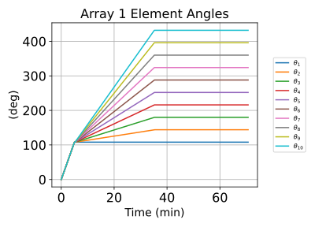
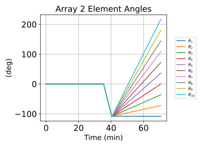
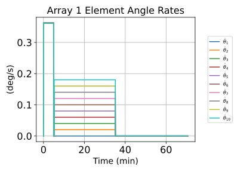
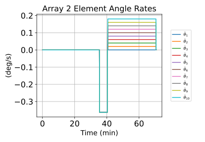
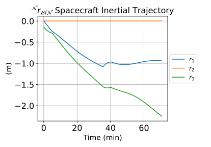
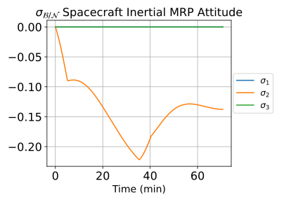
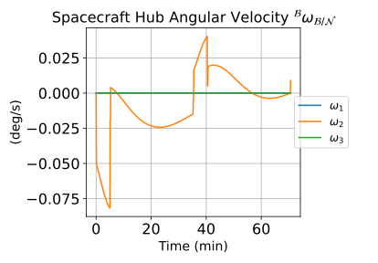
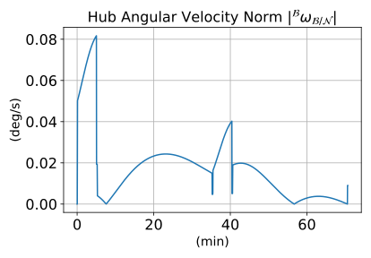

scenarioDeployingSolarArrays
Overview
This scenario demonstrates the multi-body prescribed motion dynamics capability of the Module: prescribedMotionStateEffector module through an illustrative rotational solar array deployment scenario. The spacecraft in this example consists of a rigid hub and two symmetrical solar arrays. Each array is modeled as a collection of 10 prescribed motion elements. Therefore, 20 instances of the Module: prescribedMotionStateEffector module are required to simulate the array deployments.
Note that in order to simulate hub-relative prescribed motion, kinematic profiler modules must be connected to the prescribed motion state effector modules. The kinematic profiler modules specify the translational and rotational states of each prescribed sub-component relative to the spacecraft hub and write the sub-component states at each time step to the prescribed motions state effector modules using the Basilisk messaging system. Currently two kinematic profiler modules exist in Basilisk that can be used to simulate prescribed motion. The first Module: prescribedLinearTranslation module prescribes linear translational motion of a prescribed sub-component relative to the hub; while the second Module: prescribedRotation1DOF module prescribes 1 DOF rotational motion relative to the hub.
The type of deployment simulated in this scenario is a purely 1 DOF rotational solar array deployment; therefore only the Module: prescribedRotation1DOF module is used in this scenario to profile the array element prescribed motion. Note that 20 instances of this rotational profiler module are required to profile the array deployments. Also note that because only rotational motion is profiled in this scenario, stand-alone PrescribedTranslationMsgPayload messages are required to be written for each array element and must be connected directly to the element prescribed motion state effector modules. This ensures that both the translational and rotational motion of each array element is defined relative to the hub for the entire simulation.
In this deployment scenario, the solar array positioned along the +X hub-frame axis fully deploys first, followed by deployment of the second solar array. Further, each array deploys in two stages, meaning that there are four simulation chunks required in this scenario. The 1 DOF rotational kinematic profiler modules prescribe a bang-coast-bang acceleration profile for each array element during both deployment phases. After first initializing all array elements to their stowed configuration, the array elements rotate together in the initial deployment phase downward away from the spacecraft hub. Array 1 rotates 108 degrees about +Y hub-frame axis while array 2 rotates -108 degrees about the +Y hub-frame axis. After the initial deployment phase for each array, the main deployment phase beings where the array elements unfurl simultaneously to their final deployment configurations. Note that each array element is given a different acceleration profile such that all array elements lock into place together at the final time.
Finally, note that in order to exclusively use the 1 DOF rotational profiler modules to prescribe the array deployments, the translational position of the array elements must be updated at the start of the main deployment phase for each array. The array element frames are shifted outwards to each array’s deployed center of mass location.
The script is found in the folder basilisk/examples and executed by using:
python3 scenarioDeployingSolarArrays.py
The scenario outputs eight plots. The first two plots illustrate the array element angles relative to the hub; while the following two plots illustrate the array element rates relative to the hub. The final plots illustrate the hub’s inertial motion during the array deployment. The hub’s inertial position, attitude, angular velocity, and angular velocity magnitude are given. This scenario also creates a Vizard simulation to visualize the solar array deployment.
Illustration of Simulation Results
The following plots illustrate the solar array deployment scenario simulation results.
       Visualization in Vizard
An image captured from the Vizard visualization of this simulation script is shown below. In this image, the arrays are shown in their fully deployed configuration.